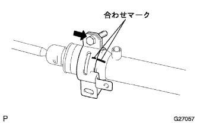
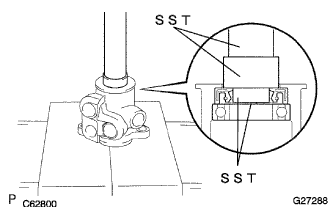

パワーステアリング リンクASSY（4WD） 分解 |
| 1. ステアリングコラムホール カバーSUB-ASSY NO.1取りはずし |
ステアリングコラムホールカバーNo.1を取りはずす。
| 2. パワーステアリングラックハウジングヒート インシュレータ取りはずし |
ボルト2本をはずし、ヒートインシュレータをステアリングリンクASSYから取りはずす。
| 3. プレッシャフィード チューブASSY取りはずし |
ボルト2本をはずし、クランプを切り離す。
 |
ユニオンナットレンチ19を使用して、プレッシャフィードチューブASSYを取りはずす。
| 4. ステアリングレフトターンプレッシャチューブ取りはずし |
ユニオンナットレンチ12を使用して、レフトターンプレッシャチューブを取りはずす。
 |
Oリング2個をレフトターンプレッシャチューブから取りはずす。
| 5. ステアリングライトターンプレッシャチューブ取りはずし |
| 6. パワーステアリング リンクASSY固定 |
保護テープを巻いたSSTを使用して、ステアリングリンクASSYをバイスに固定する。
| 7. タイロッド エンドSUB-ASSY LH取りはずし |
ラックエンドとタイロッドエンドLHに合わせマークを付ける。
 |
ロックナットをゆるめ、タイロッドエンドLHおよびロックナットを取りはずす。
| 8. タイロッド エンドSUB-ASSY RH取りはずし |
| 9. ステアリングラックブーツ クリップ取りはずし |
プライヤーを使用して、左右のクリップを取りはずす。
| 10. ステアリングラックブーツ クランプ NO.2取りはずし |
プライヤーを使用して、ブーツクランプNo.2のかしめ部をつかみ、左右にこじってかしめ部を起こして切る。
ブーツクランプNo.2をラックブーツNo.2から取りはずす。
| 11. ステアリングラックブーツ クランプ NO.1取りはずし |
| 12. ステアリングラック ブーツ NO.2取りはずし |
ステアリングラックブーツNo.2を取りはずす。
| 13. ステアリングラック ブーツ NO.1取りはずし |
ステアリングラックブーツNo.1を取りはずす。
| 14. ステアリングラックハウジング ブラケット NO.2取りはずし |
ステアリングリンクASSYおよびブラケットNo.2に合わせマークを付ける。
|  |
ボルトをはずし、ブラケットNo.2およびグロメットNo.2を取りはずす。
| 15. ステアリングラック エンドSUB-ASSY取りはずし |
SST2個を使用して、片方のラックエンドを取りはずす。
 |
取りはずしたラックエンド側のステアリングラックにSSTを取り付ける。
SSTを使用して、ラックエンドを取りはずす。
| 16. パワーステアリングラックガイド取りはずし |
 |
SSTを使用して、スプリングキャップナットを取りはずす。
 |
ストレートヘキサゴンレンチ19を使用して、スプリングキャップを取りはずす。
ラックガイドスプリングおよびラックガイドスペーサをラックハウジングから取りはずす。
ラックガイドを取りはずす。
| 17. パワーステアリングコントロールバルブASSY取りはずし |
ラックハウジングおよびコントロールバルブハウジングに合わせマークを付ける。
ボルト2本をはずし、コントロールバルブASSYをラックハウジングから取りはずす。
 |
ガスケットをラックハウジングから取りはずす。
| 18. パワーステアリングコントロールバルブ取りはずし |
コントロールバルブのセレーション部に保護テープを巻く。
SSTおよびプレスを使用して、コントロールバルブを取りはずす。
| 19. パワーステアリングコントロールバルブリング取りはずし |
マイナス薄刃ドライバーを使用して、コントロールバルブリング4個を取りはずす。
| 20. パワーステアリングコントロールバルブベアリング取りはずし |
|  |
SSTおよびプレスを使用して、コントロールバルブアッパオイルシールおよびコントロールバルブアッパベアリングを取りはずす。
| 21. シリンダエンドストッパホールスナップリング取りはずし |
ニードルノーズプライヤーを使用して、ホールスナップリングを取りはずす。
| 22. シリンダエンドストッパ取りはずし |
シリンダエンドストッパを取りはずす。
| 23. パワーステアリングラック取りはずし |
ボルトおよびプレスを使用して、ステアリングラックおよびラックブシュを取りはずす。
| 24. パワーステアリングラックブシュ取りはずし |
ラックブシュをステアリングラックから取りはずす。
マイナス薄刃ドライバーを使用して、Oリングを取りはずす。
 |
SSTを使用して、ラックブシュオイルシールを取りはずす。
| 25. ラックステアリングピストンリング取りはずし |
マイナス薄刃ドライバーを使用して、ピストンリングおよびOリングをステアリングラックから取りはずす。
| 26. パワーステアリングシリンダチューブオイルシール取りはずし |
SSTおよびプレスを使用して、シリンダチューブオイルシールを押し出す。
 |
ブラスバーおよびハンマーを使用して、SSTをたたきシリンダチューブオイルシールを取りはずす。